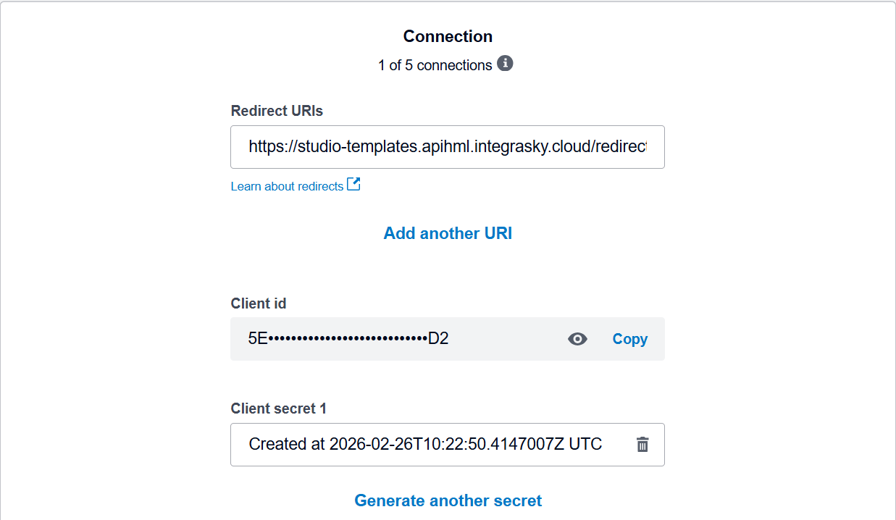
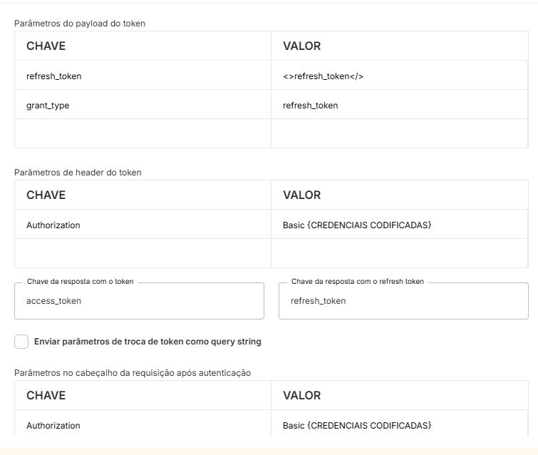
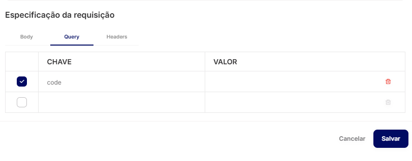
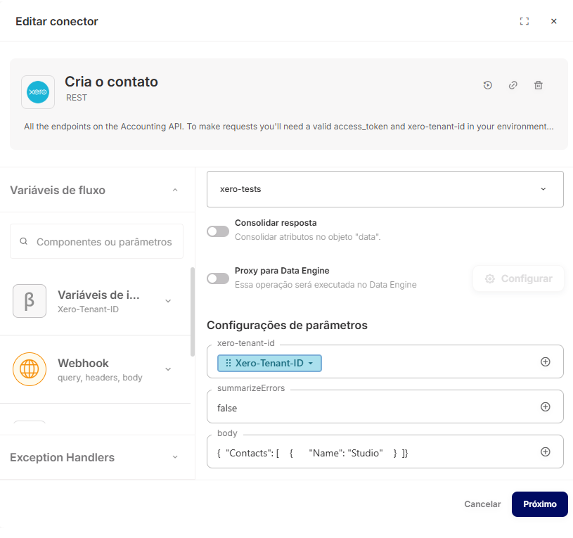

Xero Accounting
Introdução
Este artigo detalha como configurar, autenticar e integrar a API do Xero Accounting no Skyone Studio usando o template de módulo.
O que é a API do Xero Accounting?
A API do Xero Accounting utiliza uma arquitetura RESTful para permitir a interação programática com a plataforma de Contabilidade (ERP). A comunicação é realizada via protocolo HTTPS, com troca de dados padronizada no formato JSON.
Principais capacidades:
Gestão de Fluxo de Caixa: Registro e conciliação de pagamentos, transferências bancárias e transações. Controle de Vendas e Compras: Criação e manutenção de faturas (Invoices), orçamentos (Quotes) e ordens de compra. Relatórios Financeiros: Geração programática de Balanço Patrimonial, Demonstração de Resultados (P&L) e Balancetes.
Conceitos Fundamentais
A estrutura do Xero Accounting baseia-se nos seguintes pilares:
Estrutura de Dados e Hierarquia
Para manipular dados com sucesso, é fundamental compreender a hierarquia:
Tenant (Xero-Tenant-Id): Representa a organização específica (empresa) dentro do Xero. A maioria das operações exige este ID no header para identificar em qual conta contábil os dados devem ser gravados ou lidos. Contact: Entidade central que representa Clientes ou Fornecedores, vinculada a quase todas as transações financeiras. Invoice: Documento principal de cobrança ou dívida, que contém LineItems (itens de linha) detalhando produtos, serviços e impostos.
Pré-requisitos e Configuração no Xero Accounting
Para iniciar o desenvolvimento, são necessários:
Conta ativa no Xero Accounting. Acesso ao Developer
Tipos de Autenticação suportados
A API suporta: OAuth2.
Dado o fluxo de autenticação utilizado pela API do Xero ser diferente do que o Skyone Studio espera na atual versão, será necessário deixar as credenciais de client id e client secret encodadas em Base64 e expostas na configuração de conta, ou seja, visíveis para os usuários que tiverem acesso ao conector, caso isso seja um problema para seu uso, não use o template.
Obtendo uma URL de callback
O fluxo de Custom Connection é mais simples, porém exige um plano especial no Xero, possibilitando ignorar o callback, e não foi testado nesse template.
No Skyone Studio, acesse API Gateway, crie um Gateway e uma rota sem autenticação como essa:

Você pode ver a URL inteira gerada criando um fluxo e adicionando um gatilho de gateway
Obtendo as credenciais
- Na seção de apps conectados, clique em New app e selecione Web app
- Escolha um nome, coloque uma url qualquer em Company URL e a URL de callback criada anteriormente
- Clique no app conectado e em Configurações, guarde os valores de Client ID e client Secret

- Será necessário codificar em Base64 as credenciais de Client ID e Client Secret, você pode usar um desses métodos, guarde o valor resultante:
echo -n "client_id:client_secret" | base64 # em bash/zsh/sh
[Convert]::ToBase64String([Text.Encoding]::UTF8.GetBytes("client_id:client_secret")) # powershell
python3 -c "import base64; print(base64.b64encode(b'client_id:client_secret').decode())" # qualquer shell com python instalado
Substitua client_id:client_secret pelos seus credenciais reais, nesse exato formato
Configuração da conta no Skyone Studio
- Dentro do conector no Skyone Studio, clique em Conta conectada e em Adicionar conta conectada
- Crie uma conta com os seguintes valores:
| Nome da conta | [Escolha um nome identificável] |
|---|---|
| Host | https://api.xero.com/api.xro/2.0 |
| Porta | 443 |
| Client ID & Client Secret | [Preencha com suas credenciais] |
| Endpoint da troca de token | https://identity.xero.com/connect/token |
| e o restante: |

Substitua {CREDENCIAIS CODIFICADAS} pelas suas reais credenciais codificadas na etapa anterior
- Salve as alterações
- Crie ou use um fluxo de integração na seção Integrações do Skyone Studio com um gatilho de API Gateway, use o mesmo gateway e rota configurados no Xero e insira um parâmetro de query chamado code

- Insira um módulo do conector do Xero com a operação OAuth2-Get Access Token e ligue-o com o gatilho, em code insira o parâmetro de query criado anteriormente e em redirect_uri insira a mesma url de redirect configurada no Xero (a mesma do gatilho).
- Acesse a URL de autenticação do Xero e faça login, o formato dela deve ser:
https://login.xero.com/identity/connect/authorize?response_type=code&client_id={client_id}&redirect_uri={redirect_uri}&scope={scopes}
Os scopes definem as permissões do token, você deve incluir obrigatoriamente offline_access para a automatização do refresh Mais informações sobre scopes
- Após a autenticação, volte para o fluxo e acesse os logs, você deve ver nos logs do módulo do token o access_token e refresh_token
- Volte para o conector do Xero e edite a conta conectada para incluir os dois tokens, modifique o campo Parâmetros no cabeçalho da requisição após autenticação para o valor:
Bearer <>token</>
- Salve as alterações.
É viável apagar o fluxo para impedir o vazamento das informações nos logs.
Operações Disponíveis
Abaixo listamos as operações mapeadas neste conector.
| Nome da operação | Método | Descrição |
|---|---|---|
| OAuth2-Get connections | GET | Recupera as conexões atreladas a conta autenticada |
| OAuth2-Get Access Token | POST | Resgata um access token para a sua conta |
| Payments-Allows you to create multiple payments for invoices or credit notes | PUT | Cria pagamentos múltiplos para faturas ou notas de crédito. |
| Quotes-{Quote ID}-Attachments-{File Name}-Allows you to update Attachment on Quote by Filename | POST | Atualiza anexo de orçamento pelo nome do arquivo. |
| Payments-Allows you to create a single payment for invoices or credit notes | POST | Cria pagamento único para faturas ou notas de crédito. |
| Payment Services-Allows you to retrieve payment services | GET | Recupera os serviços de pagamento disponíveis. |
| Payment Services-Allows you to create payment services | PUT | Cria um novo serviço de pagamento, configurando opções e parâmetros de transação. |
| Prepayments-{Prepayment ID}-History-Allows you to retrieve a history records of an Prepayment | GET | Retorna histórico de um pré-pagamento. |
| Prepayments-{Prepayment ID}-History-Allows you to create a history record for an Prepayment | PUT | Cria registro de histórico para pagamento antecipado indicado pelo ID. |
| Prepayments-{Prepayment ID}-Allows you to retrieve a specified prepayments | GET | Recupera um pré-pagamento específico pelo ID. |
| Prepayments-{Prepayment ID}-Allows you to create an Allocation for prepayments | PUT | Cria alocação de adiantamento no prepayment especificado. |
| Prepayments-Allows you to retrieve prepayments | GET | Recupera os prepagamentos cadastrados na plataforma. |
| Purchase Orders-{Purchase Order ID}-History-Allows you to retrieve history for PurchaseOrder | GET | Exibe histórico de uma ordem de compra. |
| Purchase Orders-{Purchase Order ID}-History-Allows you to create HistoryRecord for purchase orders | PUT | Cadastrar registro de histórico para pedidos de compra |
| Purchase Orders-{Purchase Order ID}-Attachments-{File Name}-Allows you to retrieve Attachment on a Purchase Order by Filename | GET | Recupera anexo de pedido de compra pelo nome do arquivo. |
| Purchase Orders-{Purchase Order ID}-Attachments-{File Name}-Allows you to update Attachment on Purchase Order by Filename | POST | Atualiza anexo de ordem de compra mediante nome do arquivo especificado. |
| Purchase Orders-{Purchase Order ID}-Attachments-{File Name}-Allows you to create Attachment on Purchase Order | PUT | Cria anexos para um pedido de compra pelo ID do pedido e nome do arquivo. |
| Purchase Orders-{Purchase Order ID}-Attachments-Allows you to retrieve attachments for purchase orders | GET | Retorna os anexos de um pedido de compra específico. |
| Purchase Orders-{Purchase Order ID}-Attachments-Allows you to retrieve specific Attachment on purchase order | GET | Recupera um anexo específico de uma ordem de compra, identificando por ID. |
| Purchase Orders-{Purchase Order ID}-Allows you to retrieve a specified purchase orders | GET | Retorna um pedido de compra com base no ID fornecido. |
| Purchase Orders-{Purchase Order ID}-Allows you to update a specified purchase order | POST | Atualiza detalhes de uma ordem de compra específica. |
| Purchase Orders-{Purchase Order ID}-Allows you to retrieve purchase orders as PDF files | GET | Retorna o pedido de compra em PDF identificado pelo ID. |
| Purchase Orders-Allows you to retrieve purchase orders | GET | Recupera pedidos de compra. |
| Purchase Orders-Allows you to create one or more purchase orders | PUT | Cria uma ou mais ordens de compra fornecendo os detalhes da compra. |
| Purchase Orders-Allows you to update or create one or more purchase orders | POST | Atualiza ou cria uma ou mais ordens de compra. |
| Purchase Orders-Allows you to retrieve a specified purchase orders | GET | Retorna um pedido de compra com base no ID fornecido. |
| Quotes-{Quote ID}-History-(GET)Allows you to retrieve a history records of an quote | GET | Recupera o histórico de alterações do orçamento especificado. |
| Quotes-{Quote ID}-History-Allows you to retrieve a history records of an quote | PUT | Recupera o histórico de alterações do orçamento especificado. |
| Quotes-{Quote ID}-Attachments-{File Name}-Allows you to retrieve Attachment on Quote by Filename | GET | Recupera anexo de cotação pelo nome de arquivo. |
| Linked Transactions-{Linked Transaction ID}-Allows you to delete a specified linked transactions (billable expenses) | DELETE | Exclui uma transação vinculada especificada (despesas cobradas). |
| Manual Journals-Allows you to create one or more manual journals | PUT | Cria um ou mais lançamentos contábeis manuais. |
| Linked Transactions-{Linked Transaction ID}-Allows you to update a specified linked transactions (billable expenses) | POST | Atualiza um registro de transação vinculada para despesas cobráveis. |
| Linked Transactions-Retrieve linked transactions (billable expenses) | GET | Recupera despesas faturáveis vinculadas a uma transação específica. |
| Linked Transactions-Allows you to create linked transactions (billable expenses) | PUT | Cria transações ligadas (despesas incorridas) para faturamento. |
| Manual Journals-{Manual Journal ID}-Attachments-{File Name}-Allows you to retrieve specified Attachment on ManualJournal by file name | GET | Recupera o anexo especificado de um Manual Journal usando o nome do arquivo na URL. |
| Manual Journals-{Manual Journal ID}-Attachments-{File Name}-Allows you to update a specified Attachment on ManualJournal by file name | POST | Atualizar anexo especificado de ManualJournal pelo nome do arquivo. |
| Manual Journals-{Manual Journal ID}-Attachments-{File Name}-Allows you to create a specified Attachment on ManualJournal by file name | PUT | Adiciona anexo a diário manual pelo nome do arquivo. |
| Manual Journals-{Manual Journal ID}-Attachments-Allows you to retrieve Attachment for manual journals | GET | Recupera os anexos de um diário manual especificado pelo ID. |
| Manual Journals-{Manual Journal ID}-Attachments-Allows you to retrieve specified Attachment on ManualJournals | GET | Recupera o anexo especificado de um Diário Manual. |
| Manual Journals-{Manual Journal ID}-History-Allows you to retrieve history from a manual journal | GET | Buscar histórico de diário manual. |
| Manual Journals-{Manual Journal ID}-History-Allows you to create history record for a manual journal | PUT | Cria um registro de histórico para um diário manual especificado. |
| Manual Journals-{Manual Journal ID}-Allows you to retrieve a specified manual journals | GET | Recupera um diário manual específico pelo ID. |
| Manual Journals-{Manual Journal ID}-Allows you to update a specified manual journal | POST | Atualiza um diário manual especificado. |
| Manual Journals-Allows you to retrieve any manual journals | GET | Recupera todos os lançamentos manuais do sistema. |
| Payments-Allows you to retrieve payments for invoices and credit notes | GET | Recupera pagamentos por faturas e notas de crédito. |
| Manual Journals-Allows you to create a single manual journal | POST | Cria um lançamento manual único. |
| Organisation-Allows you to retrieve Organisation details | GET | Recupera detalhes de uma organização. |
| Organisation-Retrieve a list of the key actions your app has permission to perform in the connected organisation. | GET | Lista as ações principais que seu aplicativo pode executar na organização conectada. |
| Organisation-Allows you To verify if an organisation is using contruction industry scheme, you can retrieve the CIS settings for the organistaion. | GET | Verifica se a organização utiliza o CIS e recupera suas configurações. |
| Overpayments-{Overpayment ID}-History-Allows you to retrieve a history records of an Overpayment | GET | Recupera histórico do pagamento excedente. |
| Overpayments-{Overpayment ID}-History-Allows you to create history records of an Overpayment | PUT | Cria histórico de pagamentos indevidos |
| Overpayments-{Overpayment ID}-Allows you to retrieve a specified overpayments | GET | Recupera detalhes de um pagamento excedente usando seu ID específico. |
| Overpayments-{Overpayment ID}-Allows you to create a single allocation for an overpayment | PUT | Cria alocação única para saldo excedente. |
| Overpayments-Allows you to retrieve overpayments | GET | Busca pagamentos em excesso. |
| Payments-{Payment ID}-History-Allows you to retrieve history records of a payment | GET | Exibe o histórico completo de um pagamento específico. |
| Payments-{Payment ID}-History-Allows you to create a history record for a payment | PUT | Registro de histórico para um pagamento usando seu ID. |
| Payments-{Payment ID}-Allows you to retrieve a specified payment for invoices and credit notes | GET | Recuperar pagamento especificado por ID, para faturas e notas de crédito. |
| Payments-{Payment ID}-Allows you to update a specified payment for invoices and credit notes | POST | Atualiza pagamento especificado de fatura ou nota de crédito. |
| Tax Rates-Allows you to create one or more Tax Rates | PUT | Criação de uma ou mais taxas de imposto. |
| Repeating Invoices-Allows you to retrieve any repeating invoices | GET | Lista todas as faturas recorrentes. |
| Reports-(GET)Allows you to retrieve report for BAS only valid for AU orgs | GET | Retorna relatório BAS exclusivo para organizações na Austrália. |
| Reports-Allows you to retrieve report for TenNinetyNine | GET | Recuperar relatório do TenNinetyNine |
| Reports-Allows you to retrieve report for AgedPayablesByContact | GET | Relatório de contas a pagar vencidas por contato. |
| Reports-Allows you to retrieve report for AgedReceivablesByContact | GET | Buscar relatório de contas a receber em atraso por contato। |
| Reports-Allows you to retrieve report for BalanceSheet | GET | Retorna relatório de Balanço Patrimonial. |
| Reports-Allows you to retrieve report for BankSummary | GET | Recupera o relatório de resumo bancário. |
| Reports-Allows you to retrieve report for BAS only valid for AU orgs | GET | Retorna relatório BAS exclusivo para organizações na Austrália. |
| Reports-Allows you to retrieve report for Budget Summary | GET | Recupera relatório de resumo orçamentário. |
| Reports-Allows you to retrieve report for ExecutiveSummary | GET | Retorna o relatório Executive Summary. |
| Reports-Allows you to retrieve report for ProfitAndLoss | GET | Gera relatório de Lucro e Perda para análise financeira. |
| Reports-Allows you to retrieve report for TrialBalance | GET | Recupera relatório de balanço patrimonial |
| Tax Rates-Allows you to retrieve Tax Rates | GET | Recupera as taxas de imposto. |
| Repeating Invoices-{Repeating Invoice ID}-Allows you to retrieve a specified repeating invoice | GET | Recupera fatura recorrente especificada pelo ID. |
| Tax Rates-Allows you to update Tax Rates | POST | Altera as taxas de imposto. |
| Tracking Categories-{Tracking Category ID}-Options-{Tracking Option ID}-Allows you to update options for a specified tracking category | POST | Atualiza as configurações de uma opção de rastreamento dentro de uma categoria de rastreamento específica. |
| Tracking Categories-{Tracking Category ID}-Options-{Tracking Option ID}-Allows you to delete a specified option for a specified tracking category | DELETE | Exclui opção específica de uma categoria de rastreamento. |
| Tracking Categories-{Tracking Category ID}-Options-Allows you to create options for a specified tracking category | PUT | Cria opções associadas a uma categoria de rastreamento. |
| Tracking Categories-{Tracking Category ID}-Allows you to retrieve tracking categories and options for specified category | GET | Recupera categorias de rastreamento e opções associadas ao ID da categoria especificada. |
| Tracking Categories-{Tracking Category ID}-Allows you to update tracking categories | POST | Atualiza a categoria de rastreamento identificada pelo ID. |
| Tracking Categories-{Tracking Category ID}-Allows you to delete tracking categories | DELETE | Apaga categoria de rastreamento via ID especificado. |
| Tracking Categories-Allows you to retrieve tracking categories and options | GET | Buscar categorias de rastreamento e suas opções. |
| Tracking Categories-Allows you to create tracking categories | PUT | Permite criar categorias de rastreamento. |
| Users-Allows you to retrieve users | GET | Recupera lista de usuários. |
| Users-Allows you to retrieve a specified user | GET | Recupera os dados de um usuário específico usando o identificador fornecido no caminho. |
| Allows you to retrieve invoice reminder settings | GET | Recupere as configurações de lembrete de fatura filtrando por status. |
| Allows you to set the chart of accounts, the conversion date and conversion balances | POST | Definir plano de contas, data de conversão e saldos de conversão. |
| Receipts-{Receipt ID}-History-(GET)Allows you to retrieve a history records of an Receipt | GET | Retorna histórico detalhado de um recibo específico. |
| Quotes-{Quote ID}-Attachments-Allows you to retrieve Attachments for Quotes | GET | Recupera os anexos de uma cotação específica. |
| Quotes-{Quote ID}-Attachments-Allows you to retrieve specific Attachment on Quote | GET | Recupera anexo específico de uma cotação. |
| Quotes-{Quote ID}-Allows you to retrieve a specified quote | GET | Retorna a cotação especificada pelo ID fornecido. |
| Quotes-{Quote ID}-Allows you to update a specified quote | POST | Atualiza os dados de um orçamento existente identificando-o pelo ID. |
| Quotes-{Quote ID}-Allows you to retrieve quotes as PDF files | GET | Recupera o arquivo PDF de uma cotação específica pelo ID. |
| Quotes-Allows you to retrieve any sales quotes | GET | Recupera todas as cotações de vendas disponíveis. |
| Quotes-Allows you to create one or more quotes | PUT | Cria cotações individuais ou múltiplas. |
| Quotes-Allows you to update OR create one or more quotes | POST | Atualiza ou cria cotações. |
| Receipts-{Receipt ID}-Attachments-{File Name}-Allows you to retrieve Attachments on expense claim receipts by file name | GET | Recupere anexo de recibo usando o nome do arquivo. |
| Receipts-{Receipt ID}-Attachments-{File Name}-Allows you to update Attachment on expense claim receipts by file name | POST | Atualiza Anexo de Recibo por Nome |
| Receipts-{Receipt ID}-Attachments-{File Name}-Allows you to create Attachment on expense claim receipts by file name | PUT | Cria um anexo em recibo de despesa usando o nome do arquivo. |
| Receipts-{Receipt ID}-Attachments-Allows you to retrieve Attachments for expense claim receipts | GET | Busca anexos de recibos de despesa. |
| Receipts-{Receipt ID}-Attachments-Allows you to retrieve Attachments on expense claim receipts by ID | GET | Recupera anexos de recibo de despesa pelo ID. |
| Quotes-{Quote ID}-Attachments-{File Name}-Allows you to create Attachment on Quote | PUT | Cria anexo para a cota especificada pelo {Quote ID}. |
| Receipts-{Receipt ID}-History-Allows you to retrieve a history records of an Receipt | PUT | Retorna histórico detalhado de um recibo específico. |
| Receipts-{Receipt ID}-(GET)Allows you to retrieve a specified draft expense claim receipts | GET | Recupera o recibo de um rascunho de reembolso por ID. |
| Receipts-{Receipt ID}-Allows you to retrieve a specified draft expense claim receipts | POST | Recupera o recibo de um rascunho de reembolso por ID. |
| Receipts-Allows you to retrieve draft expense claim receipts for any user | GET | Recupera recibos de despesa em rascunho para qualquer usuário |
| Receipts-Allows you to create draft expense claim receipts for any user | PUT | Cria recibo de despesa em rascunho para qualquer usuário. |
| Repeating Invoices-{Repeating Invoice ID}-Attachments-{File Name}-Allows you to retrieve specified attachment on repeating invoices by file name | GET | Recupera um anexo especificado de faturas recorrentes pelo nome do arquivo. |
| Repeating Invoices-{Repeating Invoice ID}-Attachments-{File Name}-Allows you to update specified attachment on repeating invoices by file name | POST | Atualiza anexo de fatura recorrente via nome de arquivo |
| Repeating Invoices-{Repeating Invoice ID}-Attachments-{File Name}-Allows you to create attachment on repeating invoices by file name | PUT | Cria anexo em fatura recorrente usando ID e nome de arquivo. |
| Repeating Invoices-{Repeating Invoice ID}-Attachments-Allows you to retrieve Attachments on repeating invoice | GET | Recupera os anexos associados a uma fatura recorrente. |
| Repeating Invoices-{Repeating Invoice ID}-Attachments-Allows you to retrieve a specified Attachments on repeating invoices | GET | Recupera anexo específico de fatura recorrente. |
| Repeating Invoices-{Repeating Invoice ID}-History-Allows you to retrieve history for a repeating invoice | GET | Recupera histórico de uma fatura recorrente. |
| Repeating Invoices-{Repeating Invoice ID}-History-Allows you to create history for a repeating invoice | PUT | Cria registro de histórico para fatura recorrente. |
| Contacts-{Contact ID}-Attachments-Allows you to retrieve, add and update contacts in a Xero organisation | GET | Gerenciar anexos de um contato (listar, adicionar ou atualizar) |
| Bank Transfers-{Bank Transfer ID}-Attachments-Allows you to retrieve Attachments from bank transfers | GET | Recupera anexos associados a uma transferência bancária específica. |
| Bank Transfers-{Bank Transfer ID}-Attachments-Allows you to retrieve Attachments on BankTransfer | GET | Recupera anexos de uma transferência bancária específica. |
| Bank Transfers-{Bank Transfer ID}-History-Allows you to retrieve history from a bank transfers | GET | Retorna o histórico de uma transferência bancária identificada pelo ID. |
| Bank Transfers-{Bank Transfer ID}-History-create Bank Transfer History Record | PUT | Registra registro de histórico para transferência bancária |
| Bank Transfers-{Bank Transfer ID}-Allows you to retrieve any bank transfers | GET | Recupera detalhes de uma transferência bancária pelo seu identificador. |
| Bank Transfers-Allows you to retrieve all bank transfers | GET | Recupera a lista completa de transferências bancárias. |
| Bank Transfers-Allows you to create a bank transfers | PUT | Cria uma nova transferência bancária. |
| Branding Themes-{Branding Theme ID}-Payment Services-Allows you to retrieve the Payment services for a Branding Theme | GET | Recupera serviços de pagamento vinculados a um tema de marca. |
| Branding Themes-{Branding Theme ID}-Payment Services-Allow for the creation of new custom payment service for specified Branding Theme | POST | Cria serviço de pagamento customizado para tema de marca específico |
| Branding Themes-{Branding Theme ID}-Allows you to retrieve a specific BrandingThemes | GET | Recupera um tema de marca específico pelo seu ID. |
| Branding Themes-Allows you to retrieve all the BrandingThemes | GET | Lista todos os temas de branding. |
| Contacts-{Contact ID}-Attachments-{File Name}-Allows you to retrieve Attachments on Contacts by file name | GET | Recupera anexo de contato via nome do arquivo |
| Contacts-{Contact ID}-Attachments-{File Name}-update Contact Attachment By File Name | POST | Atualiza conteúdo de anexo de contato identificado por nome de arquivo. |
| Contacts-{Contact ID}-Attachments-{File Name}-create Contact Attachment By File Name | PUT | Cria um anexo para um contato, especificando o nome do arquivo. |
| Bank Transfers-{Bank Transfer ID}-Attachments-{File Name}-create Bank Transfer Attachment By File Name | PUT | Cria ou atualiza anexo de transferência bancária com nome de arquivo. |
| Contacts-{Contact ID}-Attachments-Allows you to retrieve Attachments on Contacts | GET | Recupera anexos associados a um contato específico. |
| Contacts-{Contact ID}-History-(GET)Allows you to retrieve a history records of an Contact | GET | Recupera registros históricos de um contato. |
| Contacts-{Contact ID}-History-Allows you to retrieve a history records of an Contact | PUT | Recupera registros históricos de um contato. |
| Contacts-{Contact ID}-Allows you to retrieve a single contacts in a Xero organisation | GET | Retorna os detalhes de um contato pela identificação no sistema Xero. |
| Contacts-{Contact ID}-update Contact | POST | Atualiza dados de um contato específico usando seu ID. |
| Contacts-{Contact ID}-Allows you to retrieve CISSettings for a contact in a Xero organisation | GET | Recupera as configurações CIS de um contato em uma organização Xero. |
| Contacts-Allows you to retrieve all contacts in a Xero organisation | GET | Recupera todos os contatos de uma organização Xero. |
| Contacts-Allows you to create a multiple contacts (bulk) in a Xero organisation | PUT | Cria múltiplos contatos em lote para uma organização Xero. |
| Contacts-Allows you to update OR create one or more contacts in a Xero organisation | POST | Atualiza ou cria contatos na organização Xero. |
| Contacts-Allows you to retrieve a single contact by Contact Number in a Xero organisation | GET | Busca contato único pelo número de contato na organização Xero. |
| Contact Groups-{Contact Group ID}-Contacts-Allows you to add Contacts to a Contact Group | PUT | Adiciona contatos a um grupo de contatos. |
| Contact Groups-{Contact Group ID}-Contacts-Allows you to delete all Contacts from a Contact Group | DELETE | Exclui todos os contatos de um grupo especificado. |
| Contact Groups-{Contact Group ID}-Contacts-Allows you to delete a specific Contact from a Contact Group | DELETE | Remove um contato específico de um grupo de contatos. |
| Bank Transactions-{Bank Transaction ID}-Attachments-{File Name}-Allows you to retrieve Attachments on BankTransaction by Filename | GET | Retorna o anexo de uma transação bancária especificado pelo nome do arquivo. |
| Accounts-{Account ID}-Attachments-{File Name}-Allows you to update Attachment on Account by Filename | POST | Atualiza anexo de conta identificando-o pelo nome do arquivo. |
| Accounts-{Account ID}-Attachments-{File Name}-Allows you to create Attachment on Account | PUT | Cria anexo de arquivo na conta usando nome na URL e conteúdo no corpo. |
| Accounts-{Account ID}-Attachments-Allows you to retrieve Attachments for accounts | GET | Retorna os anexos associados à conta especificada. |
| Accounts-{Account ID}-Attachments-Allows you to retrieve specific Attachment on Account | GET | Recupera anexo de conta especificado pelo ID. |
| Accounts-{Account ID}-Allows you to retrieve a single chart of accounts | GET | Recupera conta específica pelo seu ID dentro do plano de contas. |
| Accounts-{Account ID}-Allows you to update a chart of accounts | POST | Atualiza a conta no plano de contas especificada pelo ID. |
| Accounts-{Account ID}-Allows you to delete a chart of accounts | DELETE | Excluir conta usando o ID da conta |
| Accounts-Allows you to retrieve the full chart of accounts | GET | Retorna todo o plano de contas completo. |
| Accounts-Allows you to create a new chart of accounts | PUT | Permite criar um novo indice categorizado de contas |
| Batch Payments-{Batch Payment ID}/History-Allows you to retrieve history from a Batch Payment | GET | Recupera histórico de um pagamento em lote específico via ID. |
| Batch Payments-{Batch Payment ID}/History-Allows you to create a history record for a Batch Payment | PUT | Cria registro histórico para pagamento em lote. |
| Batch Payments-Retrieve either one or many BatchPayments for invoices | GET | Exibir pagamento em lote de fatura, único ou múltiplo. |
| Batch Payments-Create one or many BatchPayments for invoices | PUT | Cria um ou mais pagamentos em lote para faturas |
| Contact Groups-{Contact Group ID}-Allows you to retrieve a unique Contact Group by ID | GET | Recupera um grupo único de contatos por seu ID. |
| Bank Transactions-{Bank Transaction ID}-Attachments-{File Name}-Allows you to update an Attachment on BankTransaction by Filename | POST | Atualiza anexo de transação bancária via nome do arquivo. |
| Bank Transactions-{Bank Transaction ID}-Attachments-{File Name}-Allows you to create an Attachment on BankTransaction by Filename | PUT | Cria novo anexo para transação bancária usando nome de arquivo. |
| Bank Transactions-{Bank Transaction ID}-Attachments-Allows you to retrieve any attachments to bank transactions | GET | Recupera anexos de uma transação bancária específica. |
| Bank Transactions-{Bank Transaction ID}-Attachments-Allows you to retrieve Attachments on a specific BankTransaction | GET | Recupera anexos associados a uma transação bancária específica. |
| Bank Transactions-{Bank Transaction ID}-History-Allows you to retrieve history from a bank transactions | GET | Recupera histórico de uma transação bancária específica. |
| Bank Transactions-{Bank Transaction ID}-History-Allows you to create history record for a bank transactions | PUT | Criar registro de histórico de uma transação bancária |
| Bank Transactions-{Bank Transaction ID}-Allows you to retrieve a single spend or receive money transaction | GET | Retorna detalhes de uma transação única de débito ou crédito. |
| Bank Transactions-{Bank Transaction ID}-Allows you to update a single spend or receive money transaction | POST | Atualiza uma transação única de gasto ou recebimento. |
| Bank Transactions-Allows you to retrieve any spend or receive money transactions | GET | Recupera todas as transações de débito e crédito bancárias. |
| Bank Transactions-Allows you to create one or more spend or receive money transaction | PUT | Cria uma ou mais transações de gasto ou recebimento de dinheiro. |
| Bank Transactions-Allows you to update or create one or more spend or receive money transaction | POST | Crie ou atualize transações de débito ou crédito em transações bancárias. |
| Bank Transfers-{Bank Transfer ID}-Attachments-{File Name}-Allows you to retrieve Attachments on BankTransfer by file name | GET | Recupera anexo de transferência bancária pelo nome do arquivo. |
| Bank Transfers-{Bank Transfer ID}-Attachments-{File Name}-update Bank Transfer Attachment By File Name | POST | Atualiza anexo de transferência bancária especificado pelo nome do arquivo. |
| Invoices-Allows you to retrieve any sales invoices or purchase bills | GET | Recupera faturas de vendas ou notas de compra de qualquer empresa. |
| Expense Claims-Allows you to retrieve expense claims | PUT | Recupera todas as despesas apresentadas pela empresa. |
| Invoices-{Invoice ID}-Attachments-{File Name}-Allows you to retrieve Attachment on invoices or purchase bills by it's filename | GET | Recuperar anexo de fatura/nota pelo nome do arquivo. |
| Invoices-{Invoice ID}-Attachments-{File Name}-Allows you to update Attachment on invoices or purchase bills by it's filename | POST | Atualiza anexo de fatura ou nota de compra pelo nome de arquivo. |
| Invoices-{Invoice ID}-Attachments-{File Name}-Allows you to create an Attachment on invoices or purchase bills by it's filename | PUT | Cria um anexo em fatura ou nota de compra, identificando por nome de arquivo. |
| Invoices-{Invoice ID}-Attachments-Allows you to retrieve Attachments on invoices or purchase bills | GET | Recupera anexos em faturas ou notas de compra |
| Invoices-{Invoice ID}-Attachments-Allows you to retrieve a specified Attachment on invoices or purchase bills by it's ID | GET | Recuperar anexo específico de fatura ou nota de compra por ID |
| Invoices-{Invoice ID}-History-(GET)Allows you to retrieve a history records of an invoice | GET | Retorna histórico de uma fatura. |
| Invoices-{Invoice ID}-History-Allows you to retrieve a history records of an invoice | PUT | Retorna histórico de uma fatura. |
| Invoices-{Invoice ID}-Allows you to retrieve a specified sales invoice or purchase bill | GET | Recupera fatura de venda ou nota de compra especificada pelo ID |
| Invoices-{Invoice ID}-Allows you to update a specified sales invoices or purchase bills | POST | Atualiza fatura de venda ou compra pelo ID |
| Invoices-{Invoice ID}-Allows you to retrieve invoices or purchase bills as PDF files | GET | Retorna fatura ou recibo em PDF pelo identificador informado. |
| Invoices-{Invoice ID}-Allows you to retrieve a URL to an online invoice | GET | Obtém a URL para visualizar a fatura online. |
| Invoices-{Invoice ID}-Allows you to email a copy of invoice to related Contact | POST | Envia uma cópia da fatura por e‑mail para um contato relacionado. |
| Expense Claims-(GET)Allows you to retrieve expense claims | GET | Recupera todas as despesas apresentadas pela empresa. |
| Invoices-Allows you to create one or more sales invoices or purchase bills | PUT | Cria faturas de venda ou compra, aceitando múltiplos registros |
| Invoices-Allows you to update OR create one or more sales invoices or purchase bills | POST | Cria ou atualiza faturas de venda ou contas de compra. |
| Items-{Item ID}-History-Allows you to retrieve history for items | GET | Recupera o histórico de eventos de um item pelo seu ID. |
| Items-{Item ID}-History-Allows you to create a history record for items | PUT | Registra novo histórico de um item com o ID informado. |
| Items-{Item ID}-Allows you to retrieve a specified item | GET | Recupera detalhes de um item específico com base no seu ID. |
| Items-{Item ID}-Allows you to update a specified item | POST | Atualiza item especificado pelo ID. |
| Items-{Item ID}-Allows you to delete a specified item | DELETE | Deleta item pelo ID |
| Items-Allows you to retrieve any items | GET | Recupera todos os itens disponíveis. |
| Items-Allows you to create one or more items | PUT | Cria um ou mais itens |
| Items-Allows you to update or create one or more items | POST | Permite atualizar ou criar um ou mais itens. |
| Journals-Allows you to retrieve any journals. | GET | Recupere qualquer diário da coleção. |
| Journals-Allows you to retrieve a specified journals. | GET | Recupera um diário específico pelo ID fornecido. |
| Linked Transactions-{Linked Transaction ID}-Allows you to retrieve a specified linked transactions (billable expenses) | GET | Recupera a despesa vinculada especificada pelo ID. |
| Credit Notes-{Credit Note ID}-Allows you to create Allocation on CreditNote | PUT | Cria uma alocação associada a uma nota de crédito especificada. |
| Contact Groups-{Contact Group ID}-Allows you to update a Contact Group | POST | Atualiza os dados de um grupo de contatos usando seu ID. |
| Contact Groups-Allows you to retrieve the ContactID and Name of all the contacts in a contact group | GET | Recuperar ID e Nome de todos os contatos de um grupo |
| Contact Groups-Allows you to create a contact group | PUT | Cria um grupo de contatos para organizar e gerenciar contatos. |
| Credit Notes-{Credit Note ID}-Attachments-{File Name}-Allows you to retrieve Attachments on CreditNote by file name | GET | Recupera anexos de nota de crédito por nome de arquivo |
| Credit Notes-{Credit Note ID}-Attachments-{File Name}-Allows you to update Attachments on CreditNote by file name | POST | Atualiza o anexo de uma nota de crédito identificando-o pelo nome do arquivo. |
| Credit Notes-{Credit Note ID}-Attachments-{File Name}-Allows you to create Attachments on CreditNote by file name | PUT | Cria anexo de nota de crédito usando o nome do arquivo |
| Credit Notes-{Credit Note ID}-Attachments-Allows you to retrieve Attachments for credit notes | GET | Recupera os anexos de uma nota de crédito pelo seu ID. |
| Credit Notes-{Credit Note ID}-Attachments-Allows you to retrieve Attachments on CreditNote | GET | Recupera anexos de nota de crédito. |
| Credit Notes-{Credit Note ID}-History-(GET)Allows you to retrieve a history records of an CreditNote | GET | Reconsulta histórico da nota de crédito identificada pelo ID. |
| Credit Notes-{Credit Note ID}-History-Allows you to retrieve a history records of an CreditNote | PUT | Reconsulta histórico da nota de crédito identificada pelo ID. |
| Credit Notes-{Credit Note ID}-Allows you to retrieve a specific credit note | GET | Recupera detalhes de uma nota de crédito específica pelo ID |
| Credit Notes-{Credit Note ID}-Allows you to update a specific credit note | POST | Atualiza a nota de crédito identificada pelo ID informado. |
| Credit Notes-{Credit Note ID}-Allows you to retrieve Credit Note as PDF files | GET | Recupera nota de crédito em PDF. |
| Accounts-{Account ID}-Attachments-{File Name}-Allows you to retrieve Attachment on Account by Filename | GET | Busca e recupera anexo de conta pelo nome do arquivo. |
| Credit Notes-Allows you to retrieve any credit notes | GET | Recuperar todas as notas de crédito existentes. |
| Credit Notes-Allows you to create a credit note | PUT | Cria uma nota de crédito |
| Credit Notes-Allows you to update OR create one or more credit notes | POST | Cria ou atualiza notas de crédito com dados fornecidos. |
| Currencies-Allows you to retrieve currencies for your organisation | GET | Lista de moedas disponíveis para a sua organização |
| Currencies-create Currency | PUT | Cria uma nova moeda no sistema. |
| Employees-Allows you to retrieve employees used in Xero payrun | GET | Recupera lista de empregados usados na folha de pagamento do Xero. |
| Employees-Allows you to create new employees used in Xero payrun | PUT | Cria empregado com informações necessárias para o processamento de folha de pagamento Xero. |
| Employees-Allows you to create a single new employees used in Xero payrun | POST | Cria um empregado único para processos de payroll no Xero. |
| Employees-Allows you to retrieve a specific employee used in Xero payrun | GET | Recuperar detalhes de funcionário para folha Xero |
| Expense Claims-{Expense Claim ID}-History-Allows you to retrieve a history records of an ExpenseClaim | GET | Recupera o histórico completo de alterações de um Expense Claim. |
| Expense Claims-{Expense Claim ID}-History-Allows you to create a history records of an ExpenseClaim | PUT | Criar registro de histórico para uma solicitação de despesa. |
| Expense Claims-{Expense Claim ID}-Allows you to retrieve a specified expense claim | GET | Recupera um relatório de despesa específico pelo ID. |
| Expense Claims-{Expense Claim ID}-Allows you to update specified expense claims | POST | Permite atualizar solicitações de despesas |
O header Xero-Tenant-ID é necessário para a maioria das operações, você deve resgatar o tenant necessário com OAuth2-Get connections e pode usar as variáveis das integrações/fluxos para facilitar o uso.
Exemplo de Fluxo utilizando o Xero Accounting
Este exemplo demonstra como construir um fluxo básico para testar o template do Xero, criando um contact (contato).
Primeiro, usamos a operação OAuth2-Get connections para resgatar o Tenant ID que desejamos usar, atualizando a variável de integração (é uma boa ideia executar essa operação periodicamente e controlar as variáveis em um fluxo separado). Veja abaixo o exemplo de body para criar um contato mínimo:

O resultado final deve ser algo semelhante a isso:

Documentação Oficial da API: Xero Accounting API Reference